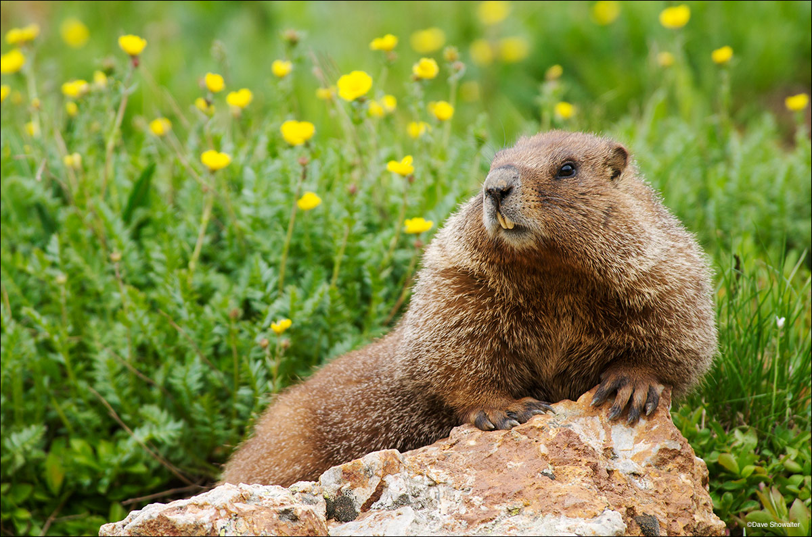

Marmot


Marmots are large rodents which vary in their fur coloration based on their environments. They are part of the squirrel family and are of the largest weight class there. Marmots prefer environments rocky terrains such as mountainous areas but also reside in meadows and grasslands. Just like other rodents in the squirrel family, they consume a mostly vegeterain diet, primarily feedings on grass.